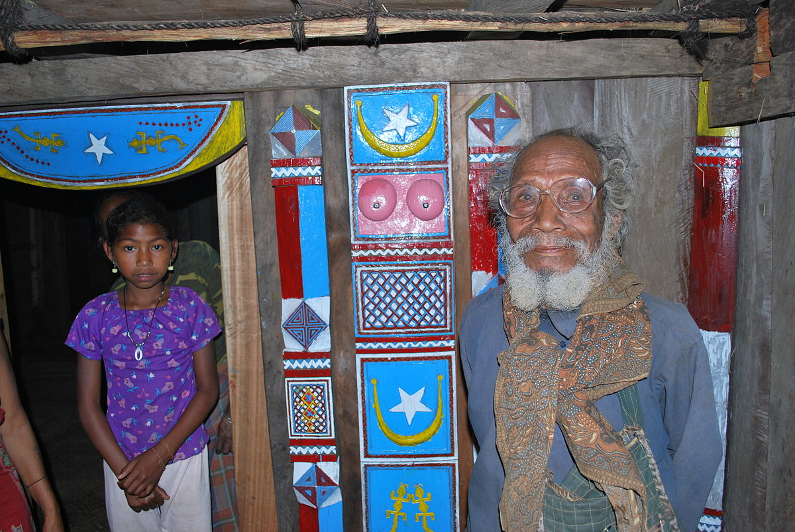

Iha loron Sabadu, ekipa Bunak Heritage Blog halo vizita ba uma lia-na'in Domingos Soares...
- Lia-na'in: "Suku Bunak iha tradisaun ne'ebé la bele haluha..."
- Ekipa Blog: "Tanba saida lian Bunak importante...?"
- Lia-na'in: "Lian Bunak mak identidade..."
